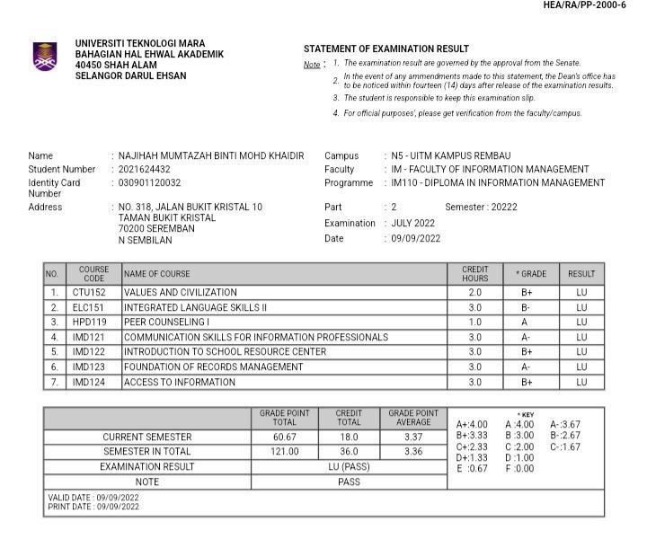
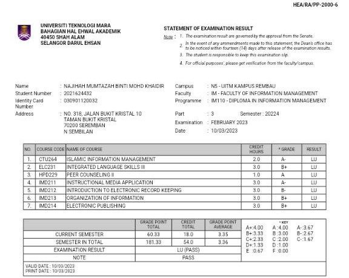

UPSR
I unexpectedly got 5A's out of 5 in UPSR. I study in SK Puteri, Seremban for six years. To be honest, I am actually quite weak in academic but, my family and I was very happy when my UPSR result was out.
SPM
I used to study at SMK Dato' Sheikh Ahmad. I took literature and visual art education course because I like literature more. As a result, I succesfully got 2As, 5Bs, and 2Cs. The most important thing is I got higher mark in Mathematic subject for the first time and the grade is B.
DIPLOMA
Now, I currently studying in UiTM Rembau under Diploma in Information Management. From semester 1 until semester 3, I had never got dean award, nevetherless, my result was always satisfied. However, I successfully got a dean award for semester 4 after study hard to get the better results.
SOME OF MY RESULTS PHOTOS
 